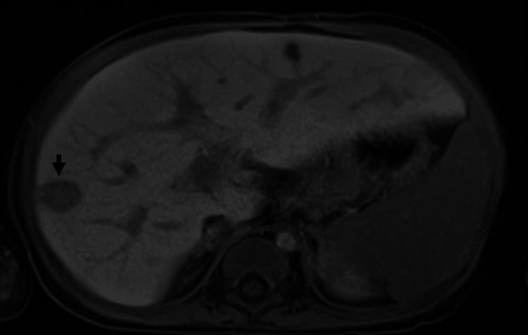
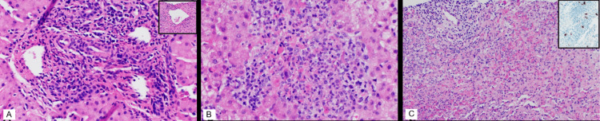
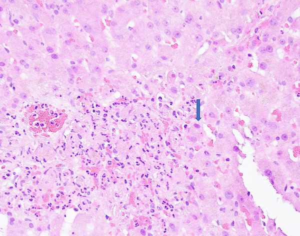

1933 — Viêm gan do adenovirus sau ghép gan ở trẻ: hoại tử gan "không đặc hiệu" ≠ thải ghép cấp / Adenovirus hepatitis after paediatric liver transplantation
Tags: pattern:viem-gan-sau-ghep pattern:tang-transaminase pattern:hoai-tu-gan pattern:ton-thuong-gan-khu-tru pattern:giam-ty-trong-gan pattern:phu-quanh-cua vung:gan vung:duong-mat protocol:SA-Doppler protocol:MRI-gan protocol:sinh-thiet-gan protocol:PCR-adenovirus score:adenovirus-DNA incidentaloma:khong
Mức chắc chắn (certainty): tổng hợp y văn (literature synthesis) — ghép đoàn hệ 10 năm, 320 trẻ ghép gan (Pediatr Transplant 2026, PMCID PMC13001004, CC BY-NC-ND), ca nguyên văn 12 tháng tuổi có MRI + 3 lần sinh thiết (Cureus 2023, PMCID PMC10733164, CC BY 4.0), tổng quan mô bệnh – hình ảnh (Front Public Health 2022, PMCID PMC9095934, CC BY), ca người lớn có ảnh mô học tế bào "smudge" (Am J Case Rep 2022, PMCID PMC9364270, CC BY-NC-ND) và 8 ca tử vong nhi (Emerg Infect Dis 2024, PMCID PMC10977843, CC BY). Không có ca do nhóm tự chụp.
Câu chốt: trẻ ghép gan sốt + transaminase tăng trong 2–8 tuần đầu, siêu âm "bình thường" — adenovirus nằm trong 3 nguyên nhân hàng đầu cùng thải ghép cấp và nhiễm CMV. Điểm chết người: tăng liều corticoid vì "thải ghép" khi mô học chỉ có viêm/hoại tử không đặc hiệu. Trong 84 ca adenovirus sau ghép gan nhi, 41% biểu hiện bằng viêm gan, 24% lan toả ≥ 2 cơ quan, tử vong 8% và 40% chẩn đoán trong 30 ngày đầu sau ghép (PMC13001004).
1. Tổng quan bệnh học – cơ chế hình ảnh (TẠI SAO)
1.1. Virus vào gan bằng đường nào và phá gan bằng cách nào
- Adenovirus người (human adenovirus, HAdV) là virus DNA sợi đôi, không có vỏ bọc; hơn 100 type, chia 7 loài A–G. Nhóm hô hấp 1–3, 5, 7; nhóm đường tiêu hoá 40, 41; ở người ghép tạng hay gặp 1–7 (PMC9095934).
- Đường vào: hô hấp, phân–miệng, phết mắt, máu/tổ chức ghép. Ở trẻ ghép gan, nguồn có thể là tái hoạt virus tiềm ẩn của người nhận hoặc lây từ người cho — ca 12 tháng tuổi trong bài nhận gan từ người cho CMV(+) và EBV(+), biểu hiện bệnh ở tuần thứ 2 sau ghép (PMC10733164).
- TẠI SAO gan là cơ quan đích: tế bào Kupffer bắt giữ HAdV trong vài phút; tế bào Kupffer chết hoại tử trong vòng 60 phút sau khi virus vào tuần hoàn, giải phóng IL-1α và HMGB1 → phản ứng viêm toàn thân. Tổn thương gan vì vậy phần lớn là miễn dịch – viêm (gián tiếp), không chỉ do virus phá tế bào trực tiếp (PMC9095934).
- Mô bệnh: hoại tử đông tụ (coagulative necrosis) KHÔNG theo dải (non-banded) — từ hoại tử điểm (spotty) < 5% đến hoại tử dưới ồ ạt và ồ ạt tới 95% nhu mô trong 12 ca được hệ thống hoá; một nửa các ca có viêm quanh khoảng cửa (periportal) rõ (PMC9095934).
- Tế bào "smudge" (smudge cells): nhân lớn, kiềm tính, chất nhiễm sắc dồn ra viền, thường có vùng thuỷ tinh ái toan ở giữa; xuất hiện nhiều nhất ở rìa vùng hoại tử, có khi rải rác trong tiểu thuỳ. Nghịch lý quan trọng: 58% (7/12) ca có rất ít viêm, cá biệt chỉ vài u hạt và thâm nhiễm lympho khoảng cửa — nên mô học "nhẹ" không loại trừ adenovirus (PMC9095934).
1.2. TẠI SAO hình ảnh học "không đặc hiệu" — vật lý của phù và hoại tử
| Tổn thương mô bệnh | Vật lý – cơ chế | Dấu hiệu trên hình ảnh |
|---|---|---|
| Phù nhu mô + phù quanh khoảng cửa | Nước ngoại bào tăng → thời gian T2 dài, T1 dài | Siêu âm: gan to, tăng hồi âm, dấu "trời sao" (starry sky) do các khoảng cửa sáng hơn nhu mô. MRI: T2/STIR tăng tín hiệu dạng dải quanh khoảng cửa; T1 giảm nhẹ (PMC9095934) |
| Hoại tử đông tụ | Nhu mô mất tưới máu, không còn mạch → không ngấm thuốc; nước nội bào → ngoại bào | CT: vùng giảm tỷ trọng (low attenuation) rõ, bờ không đều; ngấm thuốc không đồng nhất thì động mạch–cửa. MRI: vùng hoại tử T1 thấp, T2 cao, ngấm thuốc kém |
| Ổ hoại tử khu trú / "mass-like" | Hoại tử + viêm lympho–bạch cầu tập trung thành đám | CT/MRI: một hoặc nhiều ổ giảm tỷ trọng; có ca viền ngấm thuốc giống áp-xe, có ca giống di căn/lymphoma (PMC9095934) |
| Kẹp tế bào viêm + xơ nhẹ | Giảm khuếch tán do tăng độ đặc tế bào (không phải mủ) | DWI: hạn chế khuếch tán nhẹ (ADC giảm vừa), khác áp-xe hạn chế mạnh, ADC rất thấp |
- Con số then chốt: chỉ 33% ca có báo cáo hình ảnh cho thấy tổn thương không đồng nhất hoặc khu trú; 2/3 còn lại là thay đổi lan toả hoặc không đặc hiệu (PMC9095934). Vì vậy không thể chẩn đoán adenovirus bằng hình ảnh — hình ảnh dùng để loại trừ biến chứng mạch–mật và chọn chỗ sinh thiết.
- TẠI SAO ổ khu trú lại xuất hiện: tổn thương gan trong adenovirus không đồng đều về mặt giải phẫu (heterogeneous involvement). Sinh thiết mù ở thuỳ gan "trông lành" có thể chỉ thấy thải ghép cấp hoặc vài tế bào dương IHC, trong khi sinh thiết nhắm vào ổ trên MRI/CT cho thấy hoại tử lan rộng + vùi trong nhân — đúng ca 12 tháng tuổi: sinh thiết ngày 6 = thải ghép cấp vừa–nặng, ngày 12 = "không còn thải ghép", ngày 15 (nhắm ổ) = đám lympho–bạch cầu + hoại tử + u hạt lỏng, IHC adenovirus tăng dần (PMC10733164).
1.3. Ngưỡng định lượng nằm lòng
| Đại lượng | Số liệu | Nguồn |
|---|---|---|
| Bệnh adenovirus có triệu chứng sau ghép gan nhi | 26% (84/320) | PMC13001004 |
| Biểu hiện viêm gan trong số ca bệnh | 41% | PMC13001004 |
| Sốt / triệu chứng tiêu hoá lúc chẩn đoán | 53% / 48% | PMC13001004 |
| Thời điểm chẩn đoán, trung vị | 80 ngày (IQR 19–260) | PMC13001004 |
| Chẩn đoán trong 30 ngày đầu | 40% (31/84) | PMC13001004 |
| Bệnh lan toả (≥ 2 cơ quan) | 24% (20/84) | PMC13001004 |
| Tử vong chung của nhóm bệnh adenovirus | 8% (7/84) | PMC13001004 |
| Tải lượng đỉnh ở nhóm có cidofovir vs không | 491.805 (IQR 24.800–1.900.000) vs 1.000 copies/mL (IQR 595–794.794) | PMC13001004 |
| Tỷ lệ nhiễm HAdV ở người ghép tạng đặc | 5–22%, phần lớn 6 tháng đầu | PMC9095934 |
| Tỷ lệ ca viêm gan HAdV là trẻ em | 64–66% | PMC9095934 |
| Phần trăm hoại tử trong 12 ca mô học | < 5% đến 95% | PMC9095934 |
| Ca nhi có tải lượng máu toàn phần lúc chẩn đoán | 548.000 copies/mL | PMC10733164 |
| Liều cidofovir dùng trong ca nhi | 5 mg/kg (1 liều, kèm probenecid + truyền dịch) | PMC10733164 |
| Ngưỡng ức chế miễn dịch sau khi chẩn đoán (ca nhi) | ngừng mycophenolate, tacrolimus đích 7 tháng 10 ng/mL | PMC10733164 |
- Không có ngưỡng DNAemia thống nhất cho adenovirus ở trẻ ghép gan: trung tâm trong PMC13001004 dùng cidofovir khi có DNAemia + bệnh nặng, nhưng chính nhóm này tử vong cao nhất — nghĩa là chọn bệnh nhân bằng mức độ bệnh, không bằng một con số tuyệt đối.
2. Mẫu hình + chẩn đoán phân biệt theo vị trí (Gamut)
- Mẫu hình A — lan toả: gan to + phù quanh khoảng cửa + transaminase tăng (ALT/AST thường vài trăm U/L, có ca > 1.500 U/L trong viêm gan "không rõ nguyên nhân" ở trẻ). Gamut: thải ghép cấp, adenovirus, CMV/EBV, tổn thương do thuốc, ứ máu/suy tim phải.
- Mẫu hình B — nhiều ổ / giả u: ≥ 2 ổ giảm tỷ trọng, có thể có viền ngấm thuốc. Gamut theo vị trí và bờ: áp-xe vi khuẩn/nấm (bờ dày, khí trong ổ), adenovirus thể khu trú (bờ mờ, không khí, tiến triển nhanh), PTLD/lymphoma (đám đặc, hạch), di căn (hiếm ở trẻ, nhưng là chẩn đoán hay bị đặt sai — đã có ca adenovirus bị đọc là lymphoma và di căn — PMC9095934), nhồi máu gan (hình nêm, ngoại vi, theo mạch).
- Mẫu hình C — đường mật: giãn đường mật + thành ống mật dày. Gamut: hẹp miệng nối, viêm đường mật, viêm gan do adenovirus lan lên đường mật (đã mô tả vùi trong biểu mô ống mật ở 1/12 ca, 8% — PMC9095934).
- Mẫu hình D — "không có gì": siêu âm bình thường, Doppler bình thường, chỉ sốt + transaminase tăng — đây là mẫu hình thường gặp nhất và là lý do phải cấy/PCR + sinh thiết, không dựa vào hình ảnh (ca 12 tháng tuổi: siêu âm ngày nhập viện bình thường, chỉ 2 ổ giảm hồi âm mới xuất hiện ở lần siêu âm thứ hai — PMC10733164).
3. Bảng so sánh phân biệt (ma trận đối chiếu)
| Thực thể (entity) | Hình ảnh điển hình (SA/CT/MRI) | Chốt vào (rule-in) | Chốt loại (rule-out) | Gợi ý xác nhận |
|---|---|---|---|---|
| Viêm gan adenovirus | Lan toả: gan to + phù quanh cửa T2 tăng; khu trú: ổ giảm tỷ trọng bờ mờ, có thể viền ngấm thuốc; DWI hạn chế nhẹ | Sốt + transaminase tăng trong 6 tháng đầu, IHC adenovirus dương ở tế bào gan/đại thực bào, PCR máu dương | Bờ ổ dày + khí trong ổ + cấy mủ dương → áp-xe, không phải adenovirus đơn thuần | PCR adenovirus máu định lượng + sinh thiết nhắm ổ + IHC; theo dõi tải lượng |
| Thải ghép cấp (ACR) | Gan to nhẹ, phù quanh cửa, đường mật mảnh; không có ổ khu trú | Sinh thiết: viêm khoảng cửa hỗn hợp + viêm tĩnh mạch cửa/gan, phân độ Banff; đáp ứng corticoid | Vùi trong nhân + hoại tử không theo dải + IHC dương → không chỉ là ACR | Sinh thiết trước khi tăng corticoid; nhuộm IHC adenovirus trên khối mô cũ |
| Viêm gan CMV | Gan to, có thể ổ nhỏ rải rác; hiếm ổ lớn | CMV QNAT máu dương + vùi "mắt cú" trong tế bào nội mô/tế bào gan | Vùi kiềm, lớn, "smudge" + IHC adenovirus → adenovirus | PCR CMV, IHC CMV (bài 1918) |
| PTLD/lymphoma | Đám đặc, hạch rốn gan, có thể xâm lấn mạch | EBV PCR cao + mô học tăng sinh lympho đơn dòng | Tổn thương bờ mờ, không đẩy mạch, tự khỏi sau giảm ức chế → nghĩ adenovirus | EBV PCR, sinh thiết + hoá mô miễn dịch |
| Áp-xe gan (vi khuẩn/nấm) | Ổ dịch bờ dày ngấm thuốc, khí trong ổ, có thể nhiều ổ | Cấy mủ/huyết dương, sốt cao, DWI hạn chế mạnh | Ổ không khí, bờ mảnh, không mủ khi chọc + IHC adenovirus → adenovirus | Chọc hút/dẫn lưu, cấy nấm/khuẩn |
| Viêm đường mật / hẹp miệng nối | Giãn đường mật, thành ống dày, có thể sỏi bùn | MRCP thấy hẹp + giãn, đáp ứng dẫn lưu/ERCP | Đường mật không giãn, transaminase tăng không tương xứng → nghĩ nhu mô | MRCP, ERCP, cấy mật |

Ca 12 tháng tuổi ghép gan: MRI cho thấy nhiều ổ T1 giảm – T2 tăng, hạn chế khuếch tán nhẹ, ổ lớn nhất 1,6 × 1,4 cm (mũi tên). Ảnh nguyên bản, không crop. Nguồn: Cureus 2023, PMCID PMC10733164, CC BY 4.0.4. Protocol chụp + hệ phân tầng xử trí
4.1. Thứ tự hình ảnh – xét nghiệm (không được đảo)
- Siêu âm Doppler mảnh ghép (đầu tiên, tại giường): kích thước gan, hồi âm, dấu "trời sao", ổ khu trú, phổ động mạch gan – tĩnh mạch cửa – tĩnh mạch gan để loại hẹp động mạch/huyết khối (nguyên nhân ngoại khoa phải mổ lại).
- MRI gan có DWI + MRCP khi: siêu âm bất thường, vàng da/tăng bilirubin trực tiếp, hoặc nghi ổ khu trú. T2 fat-sat + DWI (b = 50/400/800) + chuỗi động mạch–cửa–muộn 3–5 phút. Giá trị: phân biệt phù lan toả – ổ hoại tử – áp-xe, và chọn ổ để sinh thiết.
- CT chỉ khi chống chỉ định MRI hoặc cần hướng dẫn sinh thiết/chọc nhanh; giảm liều theo ALARA ở trẻ.
- PCR adenovirus định lượng trong máu toàn phần + PCR dịch hô hấp/phân — lưu ý dương tính hô hấp đơn thuần không chứng minh viêm gan; ca 12 tháng tuổi panel hô hấp âm adenovirus nhưng máu 548.000 copies/mL mới là chìa khoá (PMC10733164).
- Sinh thiết gan qua da dưới hướng dẫn siêu âm/CT: ≥ 2 mẫu (1 mù + 1 nhắm ổ nếu có), gửi H&E + IHC adenovirus + CMV + EBV (EBER) + cấy. Câu hỏi bắt buộc ghi trên phiếu: "loại trừ adenovirus" để phòng xét nghiệm nhuộm IHC.
4.2. Ngưỡng hành động
- ALT/AST > 2 lần giới hạn trên kèm sốt không rõ ổ sau ghép gan → không tăng corticoid ngay; làm PCR adenovirus + siêu âm Doppler trong 24 giờ.
- DNAemia dương + bằng chứng mô học/bệnh tạng đích = bệnh adenovirus (không chỉ "nhiễm"). Xử trí theo bậc: (1) giảm ức chế miễn dịch (ngừng mycophenolate, hạ tacrolimus — ca nhi dùng đích 7 thay vì 10 ng/mL); (2) cidofovir 5 mg/kg khi bệnh nặng/lan toả, kèm probenecid + truyền dịch vì độc thận; (3) theo dõi tải lượng máu mỗi tuần.
- Ca nhi trong bài: sốt ngày 21 → 548.000 copies/mL → ngừng mycophenolate + 1 liều cidofovir 5 mg/kg → hết sốt ngày 27 → tải lượng 42.540 → 6.750 copies/mL (ngày 29 → 32) → ra viện ngày 34, PCR âm sau 7 tuần (PMC10733164).
flowchart TD
A[Trẻ ghép gan: sốt + ALT/AST tăng] --> B[Siêu âm Doppler mảnh ghép + PCR adenovirus/CMV/EBV]
B --> C{Có giãn đường mật, hẹp miệng nối hoặc bất thường mạch?}
C -->|Có| D[Xử lý biến chứng ngoại khoa: ERCP, nong mạch]
C -->|Không| E{DNAemia adenovirus dương hoặc nghi ổ khu trú?}
E -->|Không| F[Sinh thiết gan mù: phân độ Banff, IHC adenovirus/CMV]
E -->|Có| G[MRI gan + DWI + MRCP]
G --> H[Sinh thiết nhắm ổ + IHC adenovirus]
F --> I{Vùi smudge hoặc IHC adenovirus dương?}
H --> I
I -->|Có| J[Giảm ức chế miễn dịch: ngừng MMF, hạ tacrolimus]
J --> K{Bệnh nặng hoặc lan toả?}
K -->|Có| L[Cidofovir 5 mg/kg + probenecid + truyền dịch]
K -->|Không| M[Theo dõi PCR máu hàng tuần]
L --> M
I -->|Không| N[Điều trị thải ghép cấp theo Banff: corticoid]
- Đáp ứng điều trị đánh giá bằng 3 trục: sốt, transaminase, tải lượng máu; hình ảnh chỉ theo dõi ổ khu trú/áp-xe hoá (siêu âm lại — ổ giảm hồi âm biến mất ở ngày 34 trong ca nhi).
5. Biến thể bình thường và cạm bẫy
- "Mô học âm" không loại trừ: lần sinh thiết đầu có thể chỉ thấy thải ghép cấp (ca nhi: ngày 6), lần hai "không còn thải ghép" nhưng IHC đã có tế bào dương rải rác; chỉ đến khi nhắm đúng ổ mới thấy hoại tử + cụm tế bào dương. Cách tránh: nhuộm IHC adenovirus trên mọi khối sinh thiết gan sau ghép, kể cả mô cũ lưu trữ.
- Không thấy vùi không có nghĩa không có virus: 58% ca có rất ít viêm, vùi chỉ ở rìa hoại tử, có ca không có vùi điển hình nhưng IHC dương (ca nhi: "despite the absence of characteristic viral inclusions" — PMC10733164).
- Bẫy đồng nhiễm: panel hô hấp dương rhinovirus/enterovirus + coronavirus làm yên tâm sai; adenovirus trong máu mới là bằng chứng bệnh gan. Ngược lại, PCR dịch hô hấp dương adenovirus ở trẻ ghép không đủ chẩn đoán viêm gan.
- Bẫy "gan bình thường trên siêu âm": 2/3 ca không có tổn thương khu trú; Doppler bình thường chỉ loại trừ hẹp mạch, không loại trừ viêm gan.
- Bẫy DWI: hạn chế khuếch tán nhẹ trong đám hoại tử–viêm khác áp-xe (ADC rất thấp, viền dày); đừng chọc/dẫn lưu "áp-xe" không có mủ.
- Bẫy điều trị: liều cao methylprednisolone 20 mg/kg cho "thải ghép" có thể làm bùng adenovirus; trong ca nhi, corticoid được giảm dần ngay khi sinh thiết lần 2 không còn thải ghép, trước khi có kết quả IHC.
- Biến thể lành tính: tăng transaminase thoáng qua sau ghép do thuốc/thải ghép nhẹ; nếu sốt + tải lượng tăng thì không được xếp vào nhóm lành tính.
6. Tự lượng giá — Blind Quiz
Ca 1 — Bé 12 tháng tuổi, ghép gan vì teo đường mật, sốt ngày thứ 14 sau ghép, ALT 132 U/L, AST 133 U/L, GGT 228 U/L; siêu âm lần đầu bình thường.
- Hỏi: (1) Mô tả ổ tổn thương và tín hiệu; (2) 3 chẩn đoán phân biệt; (3) xét nghiệm nào quyết định và làm gì trước khi tăng corticoid?
Bấm để hiện đáp án (findings + chẩn đoán)
- Dấu hiệu: nhiều ổ T1 giảm, T2 tăng, hạn chế khuếch tán nhẹ, ổ lớn 1,6 × 1,4 cm ở hạ phân thuỳ V, không khí trong ổ, không đẩy mạch.
- Chẩn đoán: viêm gan do adenovirus sau ghép gan — không phải áp-xe (không mủ, bờ mờ) và không phải di căn/lymphoma (không đám đặc, không hạch).
- Quyết định: PCR adenovirus máu toàn phần (548.000 copies/mL) + sinh thiết nhắm ổ; giảm ức chế miễn dịch trước, cidofovir 5 mg/kg khi bệnh nặng. Không tăng corticoid khi chưa loại adenovirus.
- Nguồn ảnh: Cureus 2023, PMCID PMC10733164, CC BY 4.0 (nguyên bản).
Ca 2 — Cùng bệnh nhi, ba lần sinh thiết gan trong 9 ngày.

- Hỏi: vì sao lần 1 kết luận thải ghép cấp mà lần 3 lại ra adenovirus? Nhuộm nào chứng minh?
Bấm để hiện đáp án
- A (ngày 6): viêm khoảng cửa hỗn hợp + viêm tĩnh mạch cửa và tĩnh mạch gan = thải ghép cấp; IHC adenovirus chỉ có tế bào dương đơn lẻ.
- B (ngày 12): hết thải ghép, còn cụm lympho–bạch cầu nhỏ — dễ đọc là "âm tính".
- C (ngày 15, sinh thiết nhắm ổ dưới CT): đám lympho–bạch cầu lớn + hoại tử + u hạt lỏng, IHC adenovirus dương thành cụm (ô nhỏ).
- Bài học: tổn thương không đồng đều → sinh thiết mù bỏ sót; IHC là chốt, không phải sự hiện diện của vùi.
- Nguồn ảnh: Cureus 2023, PMCID PMC10733164, CC BY 4.0 (nguyên bản, giữ nhãn A–C).
Ca 3 — Người lớn ghép thận, sốt cao, sinh thiết gan có thâm nhiễm bạch cầu trung tính + tế bào gan hoại tử.

- Hỏi: mô tả nhân tế bào ở mũi tên; chẩn đoán và 2 chẩn đoán phân biệt mô học.
Bấm để hiện đáp án
- Dấu hiệu: tế bào gan nhân lớn, kiềm tính, chất nhiễm sắc dồn viền — tế bào "smudge", kèm ổ hoại tử + bạch cầu trung tính.
- Chẩn đoán: viêm gan adenovirus (ca ghép thận, PCR adenovirus dương).
- Phân biệt mô học: CMV (vùi "mắt cú" trong nhân và bào tương, tế bào lớn hơn, thường ở nội mô), nhiễm HSV (hoại tử đồng tụ, vùi Cowdry A, ít ở gan người lớn), thải ghép cấp (viêm khoảng cửa, không có vùi).
- Nguồn ảnh: Am J Case Rep 2022, PMCID PMC9364270, CC BY-NC-ND 4.0 — dùng nguyên bản, không crop/ghép.
Bài liên quan chéo
- 1918 – Nhiễm CMV sau ghép gan ở trẻ
- 1916 – Thải ghép cấp tế bào sau ghép gan
- 1914 – Suy chức năng mảnh ghép sớm
- 161 – Viêm ruột thừa cấp (ổ nhiễm ổ bụng ở trẻ ghép — cùng nguyên tắc "không bỏ sót ổ ngoài gan")
Ảnh
1933_viem-gan-adenovirus_MRI-ton-thuong_PMC10733164-F2.jpg— MRI T1 gan, ổ 1,6 × 1,4 cm; Cureus 2023, PMCID PMC10733164, CC BY 4.0.1933_viem-gan-adenovirus_histo-3-lan-sinh-thiet_PMC10733164-F1.jpg— H&E 3 lần sinh thiết + IHC; Cureus 2023, PMCID PMC10733164, CC BY 4.0.1933_viem-gan-adenovirus_histo-smudge-cell_PMC9364270-F1.jpg— tế bào "smudge"; Am J Case Rep 2022, PMCID PMC9364270, CC BY-NC-ND 4.0 (nguyên bản).- Chi tiết nguồn, giấy phép, phái sinh:
images/CREDITS.md; link bài gốc:sources.md.
Không dùng để chẩn đoán độc lập khi chưa có người hướng dẫn.